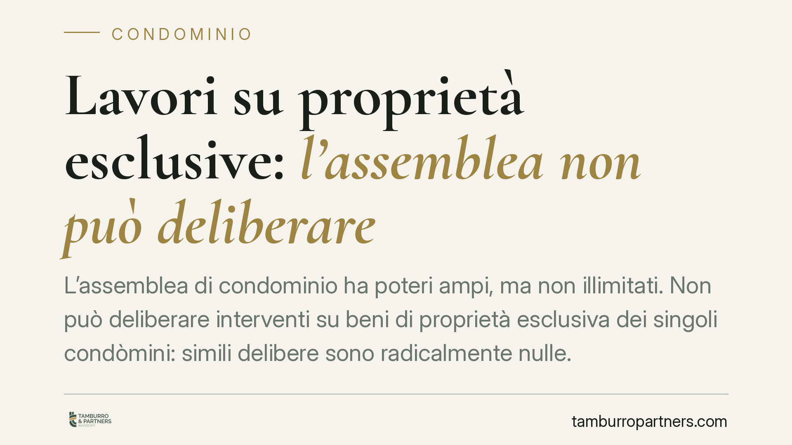

Lavori su proprietà esclusive: l'assemblea non può deliberare
L'assemblea di condominio ha poteri ampi, ma non illimitati. Non può deliberare interventi su beni di proprietà esclusiva dei singoli condòmini: simili delibere sono radicalmente nulle. Il tema torna attuale con incentivi fiscali e ordinanze comunali che spingono verso lavori su balconi, infissi o porzioni private. Capire il confine evita delibere inefficaci e contenziosi.

Il caso
La domanda è ricorrente: l'assemblea può obbligare un condòmino a eseguire lavori sulla sua proprietà privata, o deliberare direttamente tali interventi? La risposta è negativa. L'assemblea è l'organo di gestione dei beni comuni, non di quelli esclusivi. Quando travalica questo confine, la sua decisione è priva di effetti.
La questione si ripropone oggi con frequenza per effetto degli incentivi fiscali sull'edilizia e delle ordinanze comunali che impongono interventi di sicurezza o decoro. Anche in questi contesti, la presenza di un beneficio economico o di un ordine dell'autorità non amplia i poteri dell'assemblea sui beni privati.
Inquadramento normativo
Il perimetro è fissato dagli articoli del Codice civile sul condominio. L'art. 1117 c.c. individua le parti comuni dell'edificio (suolo, fondazioni, muri maestri, tetti, scale, portoni e simili), salvo che il titolo disponga diversamente. Tutto ciò che non rientra in questo elenco – o in altra fonte di comunione – resta di proprietà esclusiva del singolo.
L'art. 1135 c.c. elenca le attribuzioni dell'assemblea: approvazione del preventivo, della ripartizione delle spese, del rendiconto, delle opere di manutenzione straordinaria sulle parti comuni. Si tratta di competenze circoscritte alla gestione del condominio. Non vi rientra la disposizione sui beni di proprietà esclusiva, che resta nella piena disponibilità del titolare.
Sul piano dei rimedi, occorre distinguere tra delibere nulle e delibere annullabili. Secondo l'orientamento espresso dalle Sezioni Unite della Cassazione (sentenza n. 9839/2021, da verificare negli estremi in sede di revisione), sono nulle le delibere adottate in assenza assoluta di attribuzioni, cioè su materie estranee ai poteri assembleari. Sono invece annullabili quelle affette da vizi procedurali o di convocazione.
La differenza è sostanziale. La delibera nulla non produce effetti, può essere fatta valere in ogni tempo e da chiunque vi abbia interesse. La delibera annullabile, al contrario, deve essere impugnata entro un termine breve: l'art. 1137 c.c. fissa in trenta giorni il termine per l'impugnazione davanti all'autorità giudiziaria, decorrenti dalla delibera per i presenti dissenzienti o astenuti e dalla comunicazione del verbale per gli assenti.
La delibera che dispone lavori su proprietà esclusive rientra nella prima categoria: difetto assoluto di attribuzioni, quindi nullità. Non è soggetta al termine di trenta giorni e non si consolida con il decorso del tempo.
Implicazioni pratiche
Per l'amministratore, il rischio è duplice. Dare esecuzione a una delibera nulla espone a responsabilità, perché manca un titolo valido a disporre di beni altrui. Inoltre, le spese sostenute per interventi su proprietà private non sono ripartibili tra i condòmini secondo le regole condominiali.
Per il condòmino proprietario esclusivo, la delibera che incide sul suo bene è inefficace nei suoi confronti. Non è obbligato a subirla e può opporsi senza vincoli di decadenza, trattandosi di nullità. Resta ferma la possibilità di aderire volontariamente a un intervento coordinato, ad esempio per sfruttare incentivi fiscali, ma su base consensuale e non per imposizione assembleare.
Un chiarimento utile: l'assemblea può legittimamente deliberare interventi su parti comuni che si estendono fino al confine con la proprietà privata. Il problema sorge solo quando l'oggetto dell'opera è il bene esclusivo in sé.
Cosa fare in concreto
- Verificate l'oggetto della delibera prima dell'assemblea: distinguete con precisione parti comuni e proprietà esclusive alla luce dell'art. 1117 c.c. e dei titoli di proprietà.
- Non mettete a ordine del giorno lavori che incidono su beni privati: una simile delibera sarebbe nulla e inattuabile.
- Per gli interventi su proprietà esclusive raccogliete il consenso individuale scritto dei titolari, anche quando spinti da incentivi fiscali o ordinanze comunali.
- Documentate la ripartizione delle spese tenendo separati i costi relativi alle parti comuni da quelli gravanti sui singoli.
- Di fronte a una delibera sospetta di nullità, è opportuna una verifica tecnico-giuridica preventiva prima di darvi esecuzione.
In sintesi
L'assemblea gestisce i beni comuni, non quelli privati. Una delibera che dispone lavori su proprietà esclusive è nulla per difetto assoluto di attribuzioni: non produce effetti e non si sana con il tempo. Incentivi fiscali e ordinanze comunali non spostano questo confine. La via corretta resta il consenso individuale dei proprietari interessati.
---
Contributo informativo a cura di Tamburro & Partners Avvocati - Avv. Giuseppe Tamburro. Non costituisce parere legale.
Ogni condominio ha una storia a sé.
Se gestisci un'amministrazione e vuoi un confronto su una specifica questione condominiale, scrivi allo studio. Ti rispondiamo entro un giorno lavorativo.